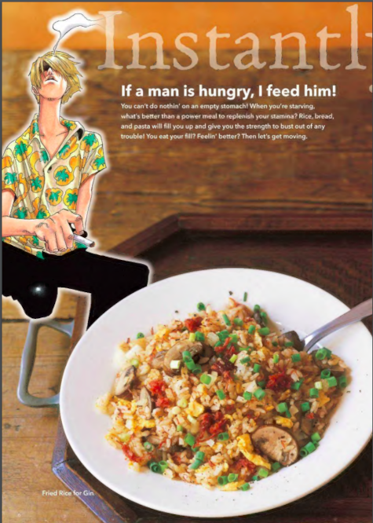

Fried Rice for Gin

A dish so warm it will make you cry.
A man lays on the floor, penniless and starved he expects death at the door of a restaurant.
When all hope was lost Sanji, the cook, gives him this warm plate of rice. Saving the heartless man
in tears.
This recipe will sure bring you back.
Ingredients(Serves 2):
- 2 cups(360G) cooked rice
- 2 large eggs, beaten
- about 50g of corned beef
- ¼ onion
- 4 small brown mushrooms
- 1 tbsp. vegetable oil
- 1 tsp. salt
- black pepper to taste
- 1 tsp soy sauce
- 1-2 green onions to taste
Steps:
- Mince the onion, finely slice the mushrooms, and chop the green onions.
- Oil the frying pan and fry half the minced onion and all the mushrooms,
then add the corned beef.
- Push the fried ingredients to one side of the pan and apply more oil to the empty space,
then pour in the beaten eggs. Add the rice before the egg firms up and mix
everything in the pan. Sprinkle salt and pepper, and then add the remaining onion.
Drizzle in soy sauce from the side of the pan and mix briefly.
When cooked, divide between plates and scatter the chopped green onions on top.